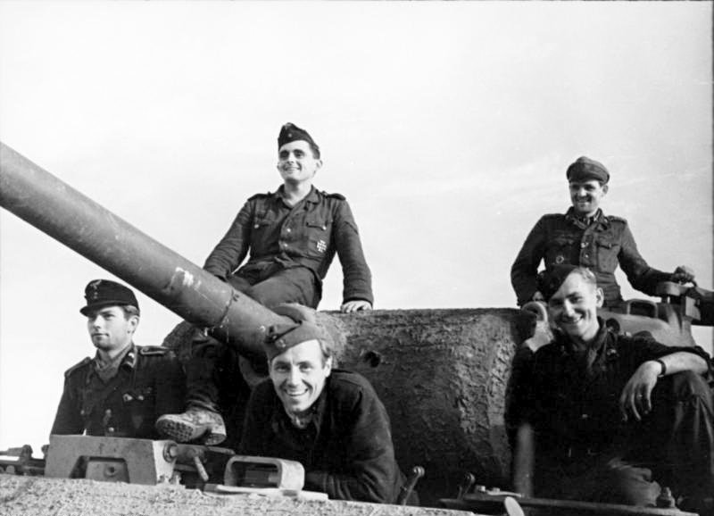
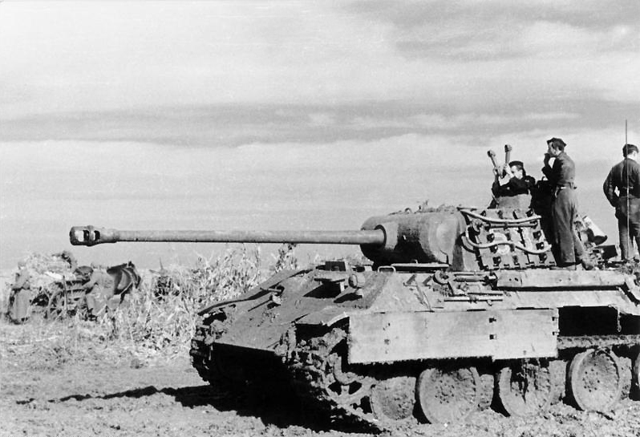

The Panther tank, officially Panzerkampfwagen V Panther (abbreviated PzKpfw V) with ordnance inventory designation: Sd.Kfz. 171, is a German medium tank of World War II. It was used on the Eastern and Western Fronts from mid-1943 to the end of the war in May 1945.
On 27 February 1944 it was redesignated to just PzKpfw Panther, as Hitler ordered that the Roman numeral "V" be deleted. In contemporary English-language reports it is sometimes referred to as the "Mark V".
The Panther was intended to counter the Soviet T-34 medium tank and to replace the Panzer III and Panzer IV. Nevertheless, it served alongside the Panzer IV and the heavier Tiger I until the end of the war. It is considered one of the best tanks of World War II for its excellent firepower, protection and mobility although its reliability in early times were less impressive.
The Panther was a compromise. While having essentially the same Maybach V12 petrol (690 hp) engine as the Tiger I, it had more effective frontal hull armour, better gun penetration, was lighter and faster, and could traverse rough terrain better than the Tiger I. The trade-off was weaker side armour, which made it vulnerable to flanking fire. The Panther proved to be effective in open country and long-range engagements.
The Panther was far cheaper to produce than the Tiger I. Key elements of the Panther design, such as its armour, transmission, and final drive, were simplifications made to improve production rates and address raw material shortages. Despite this the overall design remain described by some as "overengineered". The Panther was rushed into combat at the Battle of Kursk in the summer of 1943 despite numerous unresolved technical problems, leading to high losses due to mechanical failure. Most design flaws were rectified by late 1943 and early 1944, though the bombing of production plants, increasing shortages of high-quality alloys for critical components, shortage of fuel and training space, and the declining quality of crews all impacted the tank's effectiveness.
Though officially classified as a medium tank, at 44.8 metric tons the Panther was closer to a heavy tank weight and the same category as the American M26 Pershing (41.7 tons), British Churchill (40.7 tons) and the Soviet IS-2 (46 tons) heavy tanks. The Panther's weight caused logistical problems, such as an inability to cross certain bridges, otherwise the tank had a very high power-to-weight ratio which made it highly mobile.
The naming of Panther production variants did not, unlike most German tanks, follow alphabetical order: the initial variant, Panther "D" (Ausf. D), was followed by "A" and "G" variants.

The Panther was born out of a project started in 1938 to replace the Panzer III and Panzer IV tanks. The initial requirements of the VK 20 series called for a fully tracked vehicle weighing 20 tonnes and design proposals by Krupp, Daimler Benz and MAN ensued. These designs were abandoned and Krupp dropped out of the competition entirely as the requirements increased to a vehicle weighing 30 tonnes, a direct reaction to the encounters with the Soviet T-34 and KV-1 tanks and against the advice of Wa Prüf 6. The T-34 outclassed the existing models of the Panzer III and IV. At the insistence of General Heinz Guderian, a special tank commission was created to assess the T-34. Among the features of the Soviet tank considered most significant were the sloping armour, which gave much improved shot deflection and also increased the effective armour thickness against penetration, the wide track, which improved mobility over soft ground, and the 76.2 mm (3 in) gun, which had good armour penetration and fired an effective high-explosive round. Daimler-Benz (DB), which designed the successful Panzer III and StuG III, and Maschinenfabrik Augsburg-Nürnberg AG (MAN) were given the task of designing a new 30- to 35-tonne tank, designated VK 30.02, by April 1942.
The "VK 30.02(DB)" design resembled the T-34 in its hull and turret and was also to be powered by a diesel engine. It was driven from the rear drive sprocket with the turret situated forward. The incorporation of a diesel engine promised increased operational range, reduced flammability and allowed for better use of petroleum reserves. Hitler himself considered a diesel engine imperative for the new tank. DB's proposal used an external leaf spring suspension, in contrast to the MAN proposal of twin torsion bars. Wa Prüf 6's opinion was that the leaf spring suspension was a disadvantage and that using torsion bars would allow greater internal hull width. It also opposed the rear drive because of the potential for track fouling. Daimler Benz still preferred the leaf springs over a torsion bar suspension as it resulted in a silhouette about 200 mm (7.9 in) shorter and rendered complex shock absorbers unnecessary. The employment of a rear drive provided additional crew space and also allowed for a better slope on the front hull, which was considered important in preventing penetration by armour-piercing shells.
The MAN design embodied a more conventional configuration, with the transmission and drive sprocket in the front and a centrally mounted turret. It had a petrol engine and eight torsion-bar suspension axles per side. Because of the torsion bar suspension and the drive shaft running under the turret basket, the MAN Panther was higher and had a wider hull than the DB design. The Henschel company's design concepts for their Tiger I tank's suspension/drive components, using its characteristic Schachtellaufwerk format - large, overlapping, interleaved road wheels with a "slack-track" using no return rollers for the upper run of track, also features shared with almost all German military half-track designs since the late 1930s - were repeated with the MAN design for the Panther. These multiple large, rubber-rimmed steel wheels distributed ground pressure more evenly across the track. The MAN proposal also complemented Rheinmetall's already designed turret modified from that of the VK 45.01 (H), and used a virtually identical Maybach V12 engine to the Tiger I heavy tank's Maybach HL230 powerplant model.
The two designs were reviewed from January to March 1942. Reichsminister Fritz Todt, and later, his replacement Albert Speer, both recommended the DB design to Hitler because of its advantages over the initial MAN design. At the final submission, MAN refined its design, having learned from the DB proposal apparently through a leak by a former employee in the Wa Prüf 6, senior engineer Heinrich Ernst Kniepkamp and others. On 5 March 1942, Albert Speer reported that Hitler considered the Daimler-Benz design to be superior to MAN's design. A review by a special commission appointed by Hitler in May 1942 selected the MAN design. Hitler approved this decision after reviewing it overnight. One of the principal reasons given for this decision was that the MAN design used an existing turret designed by Rheinmetall-Borsig, while the DB design would have required a brand new turret and engine to be designed and produced, delaying the commencement of production. This time-saving measure compromised the subsequent development of the design.
Albert Speer recounts in his autobiography Inside the Third Reich:
Since the Tiger had originally been designed to weigh fifty tons but as a result of Hitler's demands had gone up to fifty seven tons, we decided to develop a new thirty ton tank whose very name, Panther, was to signify greater agility. Though light in weight, its motor was to be the same as the Tiger's, which meant it could develop superior speed. But in the course of a year Hitler once again insisted on clapping so much armour on it, as well as larger guns, that it ultimately reached forty eight tons, the original weight of the Tiger.

The weight of the production model was increased to 45 tonnes from the original plans for a 35 tonne tank. Hitler was briefed thoroughly on the comparison between the MAN and DB designs in the report by Guderian's tank commission. Armour protection appeared to be inadequate, while "the motor mounted on the rear appeared to him correct". He agreed that the "decisive factor was the possibility of quickly getting the tank into production". On 15 May 1942, Oberst Fichtner informed MAN that Hitler had decided in favour of the MAN Panther and ordered series production. The upper glacis plate was to be increased from 60 mm (2.4 in) to 80 mm (3.1 in). Hitler demanded that an increase to 100 mm (3.9 in) should be attempted and that at least all vertical surfaces were to be 100 mm (3.9 in); the turret front plate was increased from 80 mm (3.1 in) to 100 mm (3.9 in).
The Panther was rushed into combat before all of its teething problems had been corrected. Reliability was considerably improved over time, and the Panther proved to be a very effective fighting vehicle, but some design flaws, such as its weak final drive units, were never corrected.
The crew had five members: driver, radio operator (who also fired the bow machine gun), gunner, loader, and commander.
The first 250 Panthers were powered by a Maybach HL 210 P30 V-12 petrol engine, which delivered 650 metric hp at 3,000 rpm and had three simple air filters. Starting in May 1943, Panthers were built using the 700 metric horsepower (690 hp, 515 kW) at 3,000 rpm, 23.1 litre Maybach HL 230 P30 V-12 petrol engine. To save aluminium, the light alloy block used in the HL 210 was replaced by a cast iron block. Two multistage "cyclone" air filters were used to improve dust removal. Due to the use of low grade petrol, the engine power output was reduced. With a capacity of 730 litres (160 imperial gallons; 190 US gallons) of fuel, a fully fuelled Panther's range was 260 km (160 mi) on surfaced roads and 100 km (62 mi) cross country.
The HL 230 P30 engine was a very compact tunnel crankcase design, and it kept the space between the cylinder walls to a minimum. The crankshaft was composed of seven "discs" or main journals, each with an outer race of roller bearings, and a crankshaft pin between each disc. To reduce the length of the engine by an inch or so, and reduce unbalanced rocking moment caused by a normal offset-Vee type engine, the two banks of 6 cylinders of the V-12 were not offset - the "big ends" of the connecting rods of each cylinder pair in the "V" where they mated with the crankpin were thus at the same spot with respect to the engine block's length rather than offset; this required a "fork and blade" matched pair of connecting rods for each transversely oriented pair of cylinders. Usually, "V"-form engines have their transversely paired cylinders' connecting rods' "big ends" simply placed side by side on the crankpin, with their transverse pairs of cylinders offset slightly to allow the connecting rod big ends to attach side by side while still being in the cylinder bore centreline. This compact arrangement with the connecting rods was the source of considerable problems initially. Blown head gaskets were another problem, which was corrected with improved seals in September 1943. Improved bearings were introduced in November 1943. An engine governor was also added in November 1943 that reduced the maximum engine speed to 2,500 rpm. An eighth crankshaft bearing was added beginning in January 1944 to reduce motor failures.
The engine compartment was designed to be watertight so that the Panther could ford water obstacles; however, this made the engine compartment poorly ventilated and prone to overheating. The fuel connectors in early Panthers were not insulated, leading to the leakage of fuel fumes into the engine compartment, which caused engine fires. Additional ventilation was added to draw off these gases, which only partly solved the problem of engine fires. Other measures taken to reduce this problem included improving the coolant circulation inside the motor and adding a reinforced membrane spring to the fuel pump. Despite the risks of fire, the fighting compartment was relatively safe due to a solid firewall that separated it from the engine compartment.
Engine reliability improved over time. The average service life expectancy without the need to dismount the engine from the tank was about 2000 km, or around 100 working hours. A French assessment in 1947 of their stock of captured Normandy Panther A tanks concluded that the engine had an average life of 1,000 km (620 mi) and maximum life of 1,500 km (930 mi).
The suspension consisted of front drive sprockets, rear idlers and eight double-interleaved rubber-rimmed steel road wheels on each side - in the so-called Schachtellaufwerk design, suspended on a dual torsion bar suspension. The dual torsion bar system, designed by Professor Ernst Lehr, allowed for a wide travel stroke and rapid oscillations with high reliability, thus allowing for relatively high speed travel over undulating terrain. The extra space required for the bars running across the length of the bottom of the hull, below the turret basket, increased the overall height of the tank. When damaged by mines, the torsion bars often required a welding torch for removal.
The Panther's suspension was overengineered, and the Schachtellaufwerk interleaved road wheel system made replacing inner road wheels time-consuming (though it could operate with missing or broken wheels). The interleaved wheels also had a tendency to become clogged with mud, rocks and ice, and could freeze solid overnight in the harsh winter weather that followed the autumn rasputitsa mud season on the Eastern Front. Shell damage could cause the road wheels to jam together and become difficult to separate. Interleaved wheels had long been standard on all German half-tracks. The extra wheels did provide better flotation and stability, and also provided more armour protection for the thin hull sides than smaller wheels or non-interleaved wheel systems, but the complexity meant that no other country ever adopted this design for their tanks.
The Inspector General of Armoured Troops reported in May 1944:
Tracks and Suspension:
After a mileage of between 1500 km and 1800km the tracks have great wear. In many cases the guide horns of the tracks bend outward or break. In 4 cases, the tracks had to be replaced when a whole series of reinforcement guide horns were broken.
Reasons : The guide horns are probably too weak because they bend easily.
Due to the constant operations as well as the shortage of spare parts, the bearing system has not been able to be maintained and repaired as it should. For this reason, the bearing system in the available tanks is in very poor condition and has sometimes caused track/suspension failures.
In September 1944, and again in March/April 1945, MAN built a limited number of Panthers with overlapping, non-interleaved steel-rimmed 80 cm diameter roadwheels originally designed for Henschel's Tiger II and late series Tiger I Ausf. E tanks. These steel-rimmed roadwheels were introduced from chassis number 121052 due to raw material shortages.
From November 1944 through February 1945, a conversion process began to use sleeve bearings in the Panther tank, as there was a shortage of ball bearings. The sleeve bearings were primarily used in the running gear; plans were also made to convert the transmission to sleeve bearings, but were not carried out due to the ending of Panther production.
Steering was accomplished through a seven-speed AK 7-200 synchromesh gearbox from Zahnradfabrik Friedrichshafen (ZF), and a MAN single radius steering system, operated by steering levers. Each gear had a fixed radius of turning, ranging from 5 m (16 ft) for 1st gear up to 80 m (260 ft) for 7th gear. The driver was expected to judge the sharpness of a turn ahead of time and shift into the appropriate gear to turn the tank. The driver could also engage the brakes on one side to force a sharper turn. This was a much simplified design compared to the Tiger tanks.
The AK 7-200 transmission was capable of pivot turns but only when the ground resistance on both tracks was the same. This high-torque method of turning could cause failures of the final drive.
The overstressed transmission system led to premature stripping of the third gear. This was compounded by alloy shortages which made gears more brittle and prone to failure. To reach the final drive for repair, the entire driver's compartment and transmission had to be disassembled and lifted out.
The Panther's main weakness was its final drive unit. The problems stemmed from several factors. The original MAN proposal had called for the Panther to have an epicyclic gearing (planetary) system in the final drive, similar to that used in the Tiger I. Germany suffered from a shortage of gear-cutting machine tools and for mass-production numerous simplifications were made to the design and its manufacture, sometimes against the wishes of designers and army officers. Consequently, the final drive was changed to a double spur system; although simpler to produce, the double spur gears had higher loads, making them prone to failure.
A report by Dr. Puschel of MAN said "The main cause of these failures was fatigue of the compound intermediate gear due to the low-core strength of the material used and the absence of case hardening at the critical sections." and "the use of split ring dowels with only a few bolts to retain the main drive gear to its flange proved unsatisfactory. This difficulty was subsequently overcome by...fitting bolts."
German industry made a number of modifications to the final drive units on the Panther Ausf. G in September and October 1944 to increase the durability of the unit. Jacques Littlefield, of the Military Vehicle Technology Foundation, which restored a Panther Ausf. A, said "we found that the alloy and gears used in their construction were as good as we could make them today. I suspect the main problem with the final drive was that they were designed for a much lighter version of the Panther...Once they started to up-armor the Panther, there was no room to beef up the final drives to handle the extra weight.
Initial production Panthers had a face-hardened glacis plate (the main front hull armour piece), but as armour-piercing capped rounds became the standard in all armies (thus defeating the benefits of face-hardening, which caused uncapped rounds to shatter), this requirement was deleted in March 1943. By August 1943, Panthers were being built only with a homogeneous steel glacis plate. The front hull had 80 mm (3.1 in) of armour angled at 55 degrees from the vertical, welded but also interlocked with the side and bottom plates for strength. The combination of moderately thick and well-sloped armour meant that heavy Allied weapons, such as the Soviet 122 mm A-19, 100 mm BS-3 and US 90 mm M3 were needed to assure penetration of the upper glacis at normal combat ranges.
The armour for the side hull and superstructure (the side sponsons) was much thinner (40-50 mm (1.6-2.0 in)). The thinner side armour was necessary to reduce the weight, but it made the Panther vulnerable to hits from the side by all Allied tank and anti-tank guns. German tactical doctrine for the use of the Panther emphasized the importance of flank protection. 5 mm (0.20 in) thick spaced armour, known as Schürzen, intended to provide protection for the lower side hull from Soviet anti-tank rifle fire, was fitted on the hull side. Zimmerit coating against magnetic mines started to be applied at the factory on late Ausf D models beginning in September 1943; an order for field units to apply Zimmerit to older versions of the Panther was issued in November 1943. In September 1944, orders to stop all application of Zimmerit were issued, based on false rumours that hits on the Zimmerit had caused vehicle fires.
Panther crews were aware of the weak side armour and made augmentations by hanging track links or spare roadwheels onto the turret and/or the hull sides. The rear hull top armour was only 16 mm (0.63 in) thick, and had two radiator fans and four air intake louvres over the engine compartment that were vulnerable to strafing by aircraft.
As the war progressed, Germany was forced to reduce or eliminate critical alloying metals in the production of armour plate, such as nickel, tungsten and molybdenum; this resulted in lower impact resistance levels compared to earlier armour. In 1943, Allied bombers struck and severely damaged the Knaben mine in Norway, eliminating a key source of molybdenum; supplies from Finland and Japan were also cut off. The loss of molybdenum, and its replacement with other substitutes to maintain hardness, as well as a general loss of quality control, resulted in an increased brittleness in German armour plate, which developed a tendency to fracture when struck with a shell. Testing by U.S. Army officers in August 1944 in Isigny, France showed catastrophic cracking of the armour plate on two out of three Panthers examined.
The main gun was a Rheinmetall-Borsig 7.5 cm KwK 42 (L/70) with semi-automatic shell ejection and a supply of 79 rounds (82 on Ausf. G). The main gun used three different types of ammunition: APCBC-HE (Pzgr. 39/42), HE (Sprgr. 42) and APCR (Pzgr. 40/42), the last of which was usually in short supply. While it was of a calibre common on Allied tanks, the Panther's gun was the most powerful of World War II, due to the large propellant charge and the long barrel, which gave it a very high muzzle velocity and excellent armour-piercing qualities — among Allied tank guns of similar calibre, none had equivalent muzzle energy. Only the British Sherman Firefly conversion's Ordnance QF 17-pounder gun, of 3 inch (76.2mm) calibre, and a 55 calibre long (L/55) barrel, with its availability to fire APDS shot had more potential armour perforation power but was considerably less accurate owing to disturbances caused by the separation of shot and sabot and at a cost of less severe damage inside the target after perforation of the armour. The flat trajectory and accuracy of the full bore ammunition also made hitting targets much easier, since accuracy was less sensitive to errors in range estimation and increased the chance of hitting a moving target. The Panther's 75 mm gun had more penetrating power than the main gun of the Tiger I heavy tank, the 8.8 cm KwK 36 L/56, although the larger 88 mm projectile might inflict more damage if it did penetrate. The 75mm HE round was inferior to the 88mm HE round used for infantry support, but was on par with most other 75mm HE rounds used by other tanks and assault guns.
The tank typically had two MG 34 armoured fighting vehicle variant machine guns featuring an armoured barrel sleeve. An MG 34 machine gun was located co-axially with the main gun on the gun mantlet; an identical MG 34 was located on the glacis plate and fired by the radio operator. Initial Ausf. D and early Ausf. A models used a "letterbox" flap enclosing its underlying thin, vertical arrowslit-like aperture, through which the machine gun was fired. In later Ausf. A and all Ausf. G models (starting in late November-early December 1943), a ball mount in the glacis plate with a K.Z.F.2 machine gun sight was installed for the hull machine gun.
Initial Ausf. D were equipped with the Nebelwurfgerät with the later Ausf. A and Ausf. G receiving the Nahverteidigungswaffe.
The front of the turret was a curved 100 mm (3.9 in) thick cast armour mantlet. Its transverse-cylindrical shape meant that it was more likely to deflect shells, but the lower section created a shot trap. If a non-penetrating hit bounced downwards off its lower section, it could penetrate the thin forward hull roof armour, and plunge down into the front hull compartment. Penetrations of this nature could have catastrophic results, since the compartment housed the driver and radio operator sitting along both sides of the massive gearbox and steering unit. Also, four magazines containing main gun ammunition were located between the driver/radio operator seats and the turret, directly underneath the gun mantlet when the turret was facing forward.
From September 1944, a slightly redesigned mantlet with a flattened and much thicker lower "chin" design started to be fitted to Panther Ausf G models, the chin being intended to prevent such deflections. Conversion to the "chin" design was gradual, and Panthers continued to be produced to the end of the war with the rounded gun mantlet.
The Ausf A model introduced a new cast armour commander's cupola, replacing the forged cupola. It featured a steel hoop to which a third MG 34 or either the coaxial or the bow machine gun could be mounted for use in the anti-aircraft role.
Powered turret traverse was provided by the variable speed Boehringer-Sturm L4 hydraulic motor, which was driven from the main engine by a secondary drive shaft, the same system as on the PzKpfw.VI Tiger. On early production versions of the Panther maximum turret traverse was limited to 6º/second, whilst on later versions a selectable high speed traverse gear was added. Thus the turret could be rotated 360 degrees at up to 6º/second in low gear independent of engine rpm (same as on early production versions), or up to 19º/second with the high speed setting and engine at 2000 rpm, and at over 36º/second at the maximum allowable engine speed of 3000 rpm. The direction and speed of traverse was controlled by the gunner through foot pedals, the speed of traverse corresponding to the level of depression the gunner applied to the foot pedal. This system allowed for very precise control of powered traverse, a light touch on the pedal resulting in a minimum traverse speed of 0.1 deg/sec (360 degrees in 60 min), unlike in most other tanks of the time (e.g. US M4 Sherman or Soviet T-34) this allowed for fine laying of the gun without the gunner needing to use his traverse handwheel.